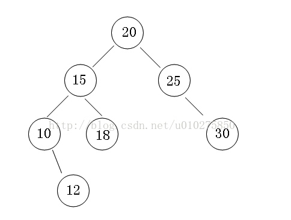
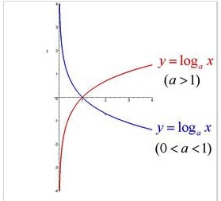
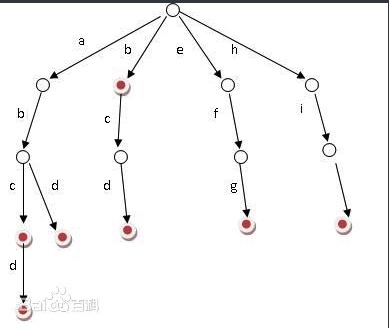
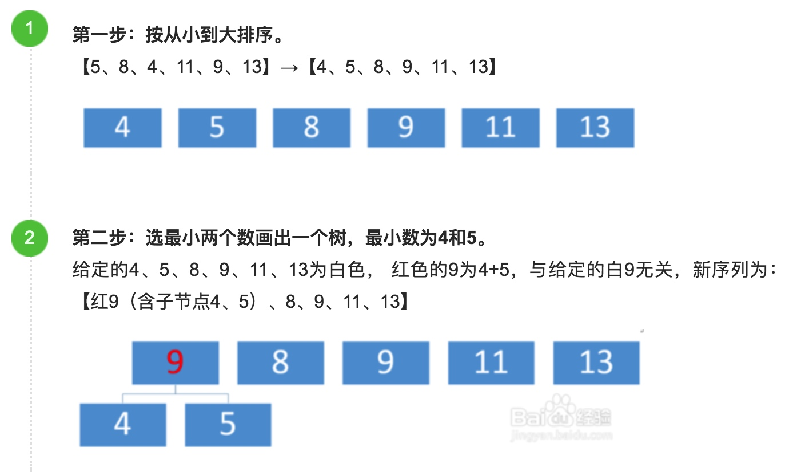
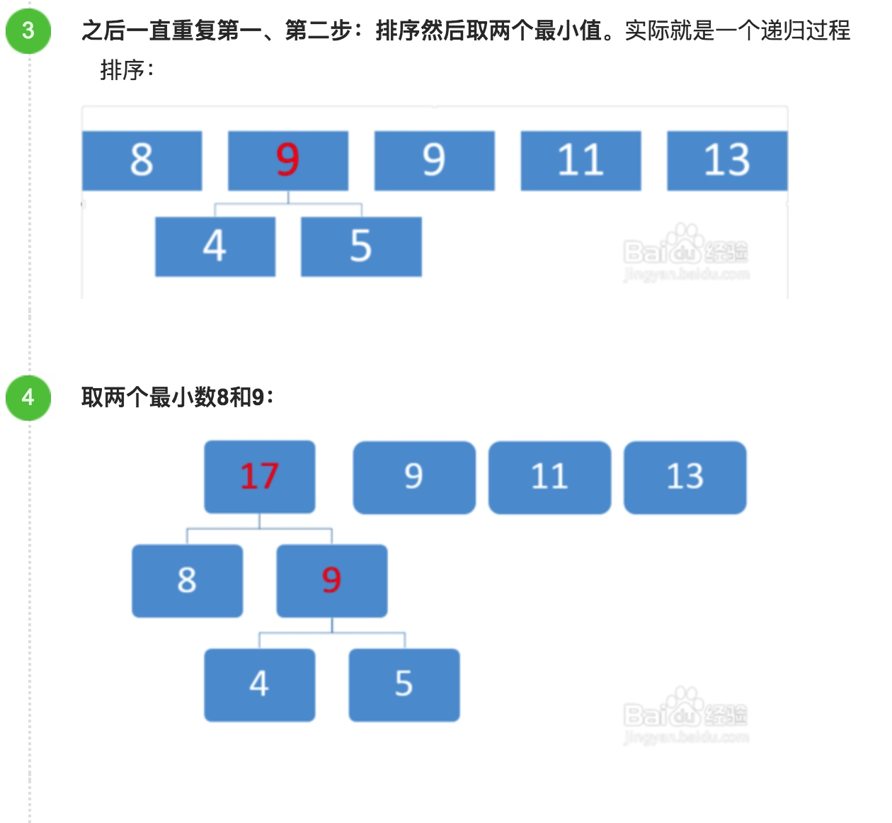
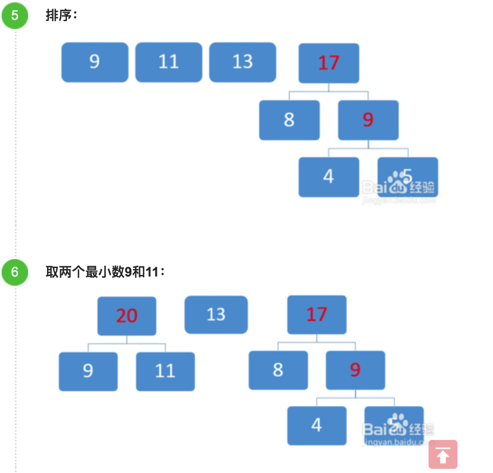
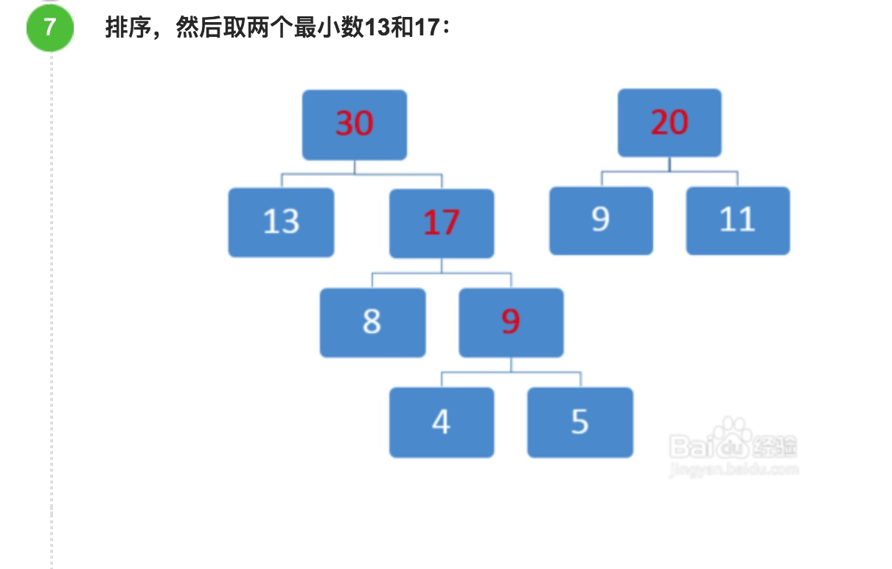
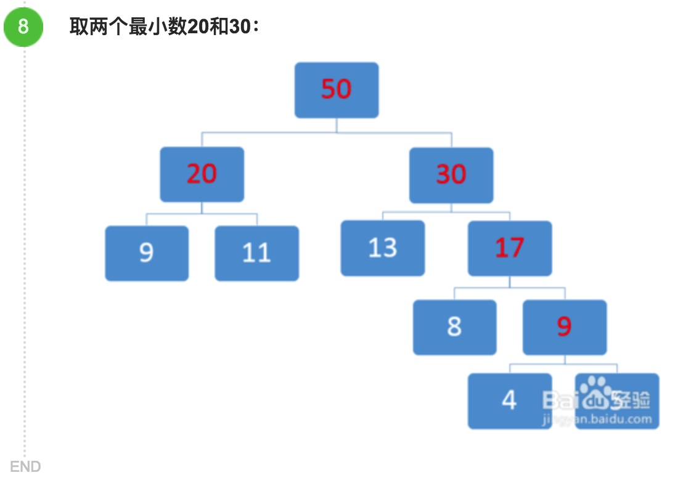

笔记--树
用途：树通过其结构来表达了一种划分查找方法，这一方法相比于遍历搜索的复杂度O(n)，一般情况下复杂度仅有O(logn)。之所以不能用散列来取代树，是因为散列需要预先开辟大量空间，并不是所有场景下都可以这么做；而如果空间不够，则会出现散列冲突（索引结构被破坏）。树则可以动态改变存储空间，且运用一些手段来保护自身索引结构。
分类
无序树：有这个东西，但是没有意义
有序树：树中任意节点的子节点之间有顺序关系，这种树称为有序树；
二叉树：每个节点最多含有两个子树的树称为二叉树；
完全二叉树：对于一颗二叉树，假设其深度为d（d>1）。除了第d层外，其它各层的节点数目均已达最大值，且第d层所有节点从左向右连续地紧密排列，这样的二叉树被称为完全二叉树；
满二叉树：对于上述的完全二叉树，如果去掉其第d层的所有节点，那么剩下的部分就构成一个满二叉树（此时该满二叉树的深度为d-1）；
霍夫曼树：带权路径最短的二叉树称为哈夫曼树或最优二叉树；
B树
用途：
赫夫曼树：压缩数据（压缩软件），压缩编码
Trie字典树：搜索引擎系统用于文本词频统计
红黑树: 关联数组
B+ 树用于索引 数据库和操作系统的文件系统
人机对战（不断的对树的搜索，找出最优的选择）
树的遍历
（小技巧） 严格按照下面的定义对每一个节点都必须正确
- 先序遍历（前缀表达式）：打印顺序：节点、左子树、右子树。(根左右)
- 中序遍历（中缀表达式）：打印顺序：左子树、节点、右子树。（左根右）
- 后序遍历（后缀表达式）：打印顺序：左子树、右子树、节点。（左右根）
例题：

中序遍历的结果就是：10 12 15 18 20 25 30
先序遍历的结果就是：20 15 10 12 18 25 30
后序遍历的结果就是：12 10 18 15 30 25 20
树的基本概念
树：自平衡二叉搜索树 (self-balanced BST)的精髓，便在于其维护自身稳定（平衡）的能力。当树不平衡时，其搜索复杂度便不再是O(logn)了——考虑一个极端情况：一棵树每个节点都只有右子节点，那么树就退化为了链表，查找复杂度也和链表一样是O(n)
对数函数

二叉查找树：Binaery
自平衡二叉树：始终维持输的平衡状态的数据结构
B树（B-树）
B+
AVL
-= AVL树：每个节点的左子树和右子树的高度最多差1的二叉查找树，并且左右两个子树都是一棵平衡二叉树（又称为平衡二叉树或平衡树，是带有平衡条件的二叉查找树）。
红黑树
Trie树（字典树）
又称单词查找树，字典树。根节点不包含字符，除根节点外每一个节点都只包含一个字符； 从根节点到某一节点，路径上经过的字符连接起来，为该节点对应的字符串； 每个节点的所有子节点包含的字符都不相同
应用于统计，排序和保存大量的字符串（但不仅限于字符串），所以经常被搜索引擎系统用于文本词频统计。它的优点是：利用字符串的公共前缀来减少查询时间，最大限度地减少无谓的字符串比较，查询效率比哈希树高。

哈夫曼树
哈夫曼树（霍夫曼树）又称为最优二叉树.
一般用来减少程序整体运行时间，将权重大的放在前面。
下面我们以【5、8、4、11、9、13】为例来画出哈夫曼树（数字大小代码权重大小，越大的权重越大）
方法/步骤




